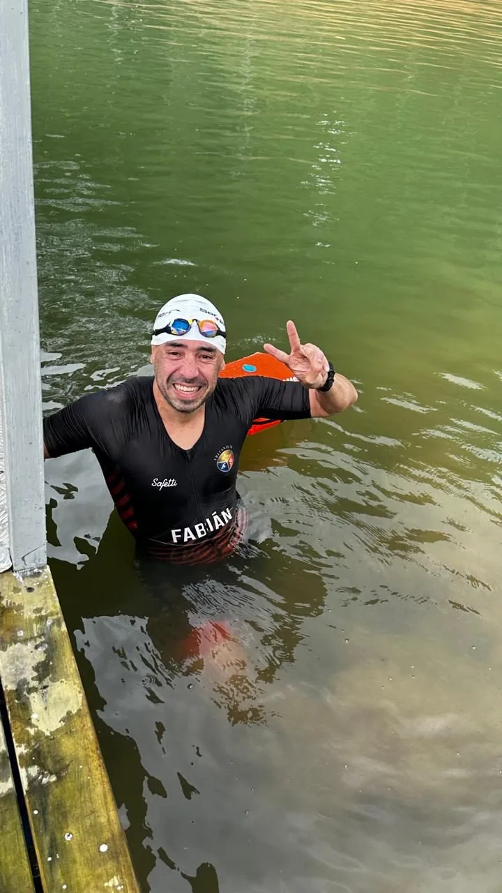
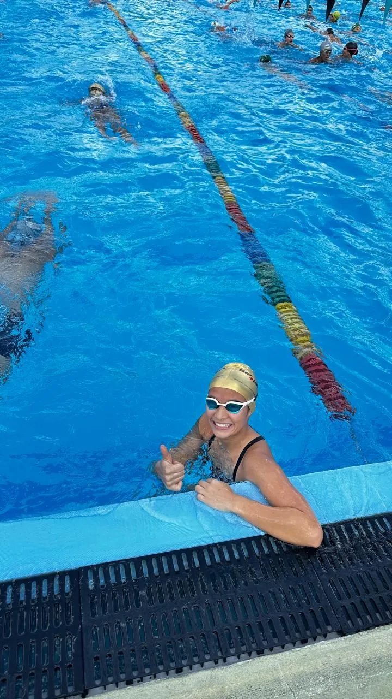

Carril 01 · 8–11 años Prof. 1.20 m
Aprender a nadar y entrenar
La etapa de sembrar el amor por el agua: técnica en los cuatro estilos, confianza y buenos hábitos.
- Los cuatro estilos
- Confianza
- Aprender jugando

SER MÁS Natación. Formamos personas a través del agua: cuatro categorías, de los 8 años al alto rendimiento, y natación máster y triatlón para adultos.
En SER MÁS Natación creemos que formar un nadador es formar una vida. Cada brazada es un aprendizaje, cada metro recorrido es un acto de valentía y cada entrenamiento, una oportunidad de construir carácter.
Nuestro nombre nace de una convicción clara: todos podemos superarnos, crecer y trascender, dentro y fuera del agua. Por eso trabajamos con una metodología internacional y un compromiso emocional con cada deportista y su familia.
Conoce el club y nuestra filosofía

Cuatro categorías, cuatro carriles. Cada una nada un poco más hondo: de aprender a nadar al alto rendimiento.
Carril 01 · 8–11 años Prof. 1.20 m
La etapa de sembrar el amor por el agua: técnica en los cuatro estilos, confianza y buenos hábitos.
Carril 02 · 12–14 años Prof. 1.60 m
Competir no es ganar: es dar lo mejor de ti. Ritmo, mejores tiempos y fortaleza mental, sin dejar de divertirse.
Carril 03 · 15–17 años Prof. 2.00 m
Aquí el nadador empieza a verse como atleta: mejores marcas, finales y selecciones.
Carril 04 · 17+ años Prof. 2.50 m
Entrenar para ganar: marcas significativas, finales nacionales y escenarios internacionales.
También en Team SER+

Para adultos de todos los niveles: aprende a nadar, mejora tu técnica o prepárate para competir, en piscina y en aguas abiertas.
Conoce el programa
Para niños, jóvenes y adultos: trabajamos según tus objetivos, con un plan a tu medida, y buscamos que los cumplas al máximo.
Quiero información25 fotos del club en tres carriles: entrenos, torneos y aguas abiertas. Pasa el cursor para frenar un carril y toca una foto para verla grande.
1Entreno y escuela
2Competencia
3Aguas abiertas y equipo
En Team SER+ entrenamos para competir. Cada nadador tiene una marca que perseguir y un plan para bajarla, centésima a centésima, temporada tras temporada.
Animación: un nadador del club compite contra la línea de su marca personal en 50 metros libre y la supera en el último tramo.
Cuatro categorías, de los 8 años al alto rendimiento. Subes cuando tu técnica y tus tiempos dicen que estás listo.
Festivales, interclubes y campeonatos: preparamos cada prueba contigo y estamos en el borde de la piscina cuando suena la salida.
Evaluamos la técnica y los tiempos durante la temporada. Sabes dónde está tu próxima centésima.
Natación específica para triatletas, en piscina y en aguas abiertas, para salir del agua con ventaja.
Inspirado en los modelos LTAD (Australia) y ADM (USA Swimming): el éxito deportivo se construye a largo plazo. Como una prueba de 100 metros, se nada por parciales.
Primero, la técnica: es el corazón del programa. Postura, patada, ritmo, subacuáticos, salidas y giros.
Luego, el entrenamiento: progresivo y por categorías. No aceleramos procesos ni comparamos niños.
Finalmente, la competencia: una herramienta para crecer, medirse y aprender a manejar la presión.
Todo, enmarcado en el desarrollo del ser humano. Celebramos marcas, pero más el esfuerzo y la actitud.
Los valores SER MÁS no compiten entre sí: nadan juntos y llegan juntos. Esta es la final que se nada todos los días en nuestra piscina.
Toca un valor para ver lo que significa.
Dónde entrenamos
Entrenamos en Medellín y en Envigado. Escríbenos y te decimos el horario de tu categoría en cada sede.
Medellín
Cra. 72 # 48-100 · Laureles–Estadio
Cómo llegarEscríbenos y te contamos horarios, categorías y valores. Tu primera brazada empieza con un mensaje.
Elige cómo empezar
Sin costo Clase gratis de bienvenida Ven, conoce al equipo y prueba el agua. Solo cuatro datos. Temporada 2026 Matrícula Datos del deportista, seguridad social y reglamento, en línea.Tus datos viajan cifrados y solo los ve el club. Política de datos